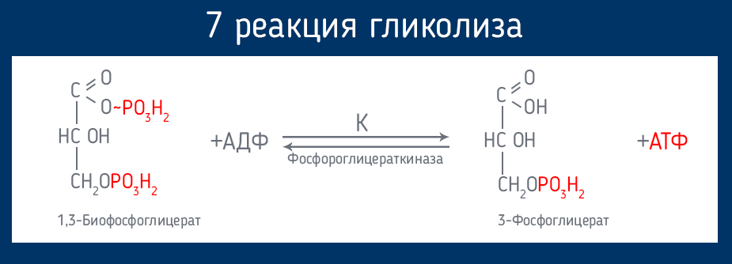

Нообет – иновационное средство для борьбы с учащенным мочеиспусканием и диабетом
Рекомендован для использования всем мужчинам и женщинам после 40 лет!
- Безопасно расщепляет лишнюю глюкозу
- Нормализует мочеиспускание
- Предупреждает развитие рака
простаты для мужчин - Растворяет камни в почках
- Нормализует углеводный обмен
- Восстанавливает функции печени и почек
- Снижает резистивность к инсулину
До конца акции осталось
Нообет – препарат для нормализации уровня глюкозы
Появлению препарата предшествовали 10 лет разработок и 3 года тщательных клинических испытаний, доказавших эффективность препарата в нормализации глюкозы, устранении учащенного мочеиспускания, снижении резистивности к инсулину.
Важным преимуществом Нообет является исключительно натуральный состав, поэтому он не только не вредит организму человека, но и оздоровляет его. Украинская ассоциация эндокринологов рекомендует препарат для домашнего использования!
Как именно действует Нообет?
Нообет обогащен тауратом магния, который участвует в переносе фосфатов, полученных в результате протекания гликолиза. Благодаря таурату магния глюкоза расщепляется намного быстрее – ее уровень в крови нормализуется. Прием магния позволяет снизить резистивность (толерантность) к инсулину.
Помимо магния в экстрактах Нообет содержит полезные для диабетиков микро- и
макроэлементов.
Мнение эксперта
Диабет одно из самых страшных заболеваний. Если вы хотите избежать его появления с возрастом, я рекомендую провести очистку организма от скоплений глюкозы (внутреннего сахара), которые появились со временем.
Это не только предупредит опасные последствия в будущем, но и оздоровит ваш организм в настоящем. Сахар не только разрушает внутренние органы, но и угнетает ваше самочувствие, поэтому положительные изменения в своем здоровье вы почувствуете уже после нескольких дней приема Нообет. Также этот препарат поможет вам нормализовать мочеиспускание.
В последнее время рекомендую Нообет большинству своих пациентов, и отзывы о нем самые наилучшие.